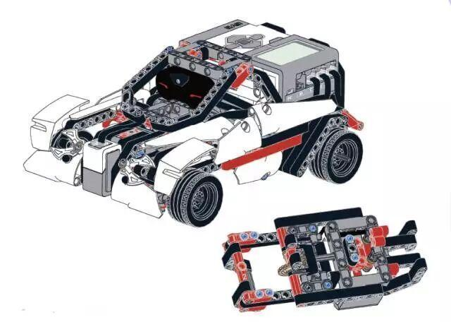

乐高在 CES 2013 上发布了新一代机器人 Mindstorms EV3。
在十五年前乐高就推出了机器人开发套件，结果出人意料地受欢迎。这些套件就渐渐演变成了现在的Mindstorms系列。它让乐高DIY爱好者们有了科学、系统、便捷的机器人改装套件，能把更多的精力投入到创意本身上面去。他们可以搭建出一切——“让机器人来做任何事情，从冲马桶到解决魔方”。
Edge-following and Obstacle-sensing LEGO MINDSTORMS EV3 RobotGuitar Playing Lego MindstromsWall-e LEGO MINDSTORMS EV3
是不是非常有趣？
那想不想学习一下究竟如何搭建与编程？
日本乐高大师五十川芳仁呕心力作，中文乐高论坛创始人精心解读，181例搭建技巧实例